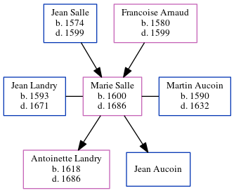

Marie Aucoin (née Salle) 1600 - 1686
[ Home ] | [ Calendar ] | [ Surnames Index ] | [ Census Index ] | [ Family History ]The child of Jean Salle and Francoise Arnaud, Marie Salle, the 11 times great-grandmother of Michele Copp (née Phillips), was born in Cougnes, Larochelle, Annis, France in 16001, and was orphaned in 1599 by the death of both parents in that year her.
She was married twice - to Jean Landry (in 1625 in France) Martin Aucoin (in Fr). She had 2 children: Jean with Martin and Antoinette with Jean Claude
She died in 1686 in Port Royal, Acadia, Nova Scotia, Canada.
Parents
- Jean Denys was born in 1574
- Francoise was born in 1580
Children
- Antoinette was born in 1618
Citations
- U.S. and International Marriage Records, 1560-1900 Online publication - Provo, UT, USA: The Generations Network, Inc., 2004.Original data - This unique collection of records was extracted from a variety of sources including family group sheets and electronic databases. Originally, the information was deriv
Family Tree
Generated by ged2site. Last updated on Jun 6, 2024